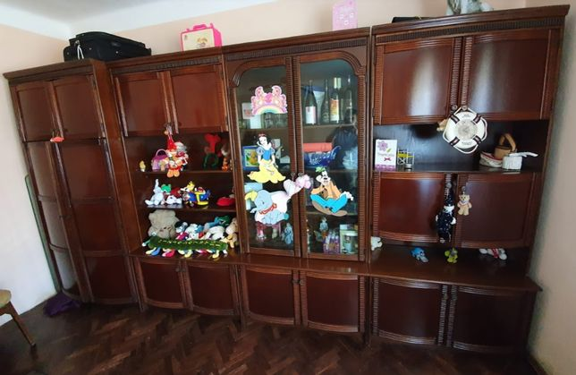
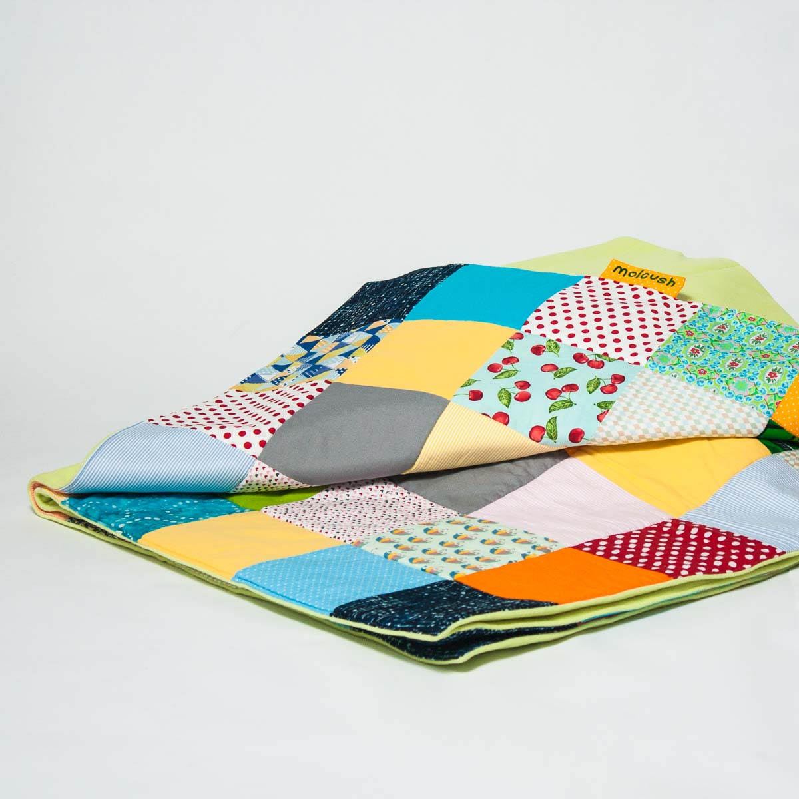

Dormitor
 +373 60 531 531 CONTACTAŢI-NE AICI BROȘURĂ MAGAZINE Conectare Zona personală Informatii despre cont Istoric comenzi Favorite Deconectare 1 +373 60 531 531 Dormitor Baie Birou Sufragerie Bucătărie Depozitare Perdele Grădină Pentru casă Dormitor Somiere Cadre de pat Cuverturi Noptiere Pat etaj/cu sertare Canapele Extensibile Cearșafuri Comodă cu sertare Dulapuri Lenjerii de pat Plăpumi Fețe de pernă Paturi Pliante Saltele superioare Saltele Oglinzi Perne Baie Accesorii Baie Covorașe de baie Halate de baie Haine/încălțăminte Pentru haine Perdele de duș Prosoape Birou Birouri/Birouri Calc Diverse birou Scaune gaming Scaune de birou Sufragerie Fotolii Canapele Canapele Extensibile Măsuțe de cafea/colț Comode TV Fotoliu tip puf Îngrijire mobil/Acc Bucătărie Bănci Mese/scaune bar Bufete/Dulapuri Scaune Dining Seturi dining Mese dining Scaune plia/taburete Depozitare Coșuri, etc. Bibliotecă/Etajeră Comodă cu sertare Suporturi de umerașe Diverse Dulapuri Mobilier pentru hol Umerașe Pantofar Rafturi Perdele Accesorii/unelte Galerii perdele Jaluzele plisate Perdele gata făcute Rolete Grădină Accesorii grădină Bănci de grădină Genți termice Scaune de grădină Perne de grădină Mese Pavilioane Ghivece de flori Lămpi Și Felinare Lămpi Solare Mobilier terasă Seturi de terasă Umbrele de soare, etc Pentru casă Covoare Perne Obiecte decorative Preș Fețe de masă Piele Pentru casă Iluminat Mobilier copii Produse pentru copii Pentru haine Lavete Oglinzi Pături Perne șezut Pagina principala / Dormitor
Lista de favorite
(0) Somiere Cadre de pat Cuverturi Noptiere Pat etaj/cu sertare Canapele Extensibile Cearșafuri Comodă cu sertare Dulapuri Lenjerii de pat Plăpumi Fețe de pernă Paturi Pliante Saltele superioare Saltele Oglinzi PerneO GAMĂ VARIATĂ DE MOBILIER PENTRU DORMITOR, SALTELE, PLĂPUMI ȘI PERNE
JYSK îți oferă o gamă extinsă de mobilă pentru dormitor, paturi continentale, paturi pliante, saltele anatomice cu arcuri sau cu spumă, plăpumi cu umplutură naturala sau cu pene și fulgi, perne cu umplutură naturală sau cu pene și fulgi și perne din foam, cearșafuri cu elastic, antialergice și cearșafuri impermeabile şi dispune de un sortiment bogat care să se potrivească modului în care dormi, totul la preţuri convenabile.
Gama noastră de saltele este numită DREAMZONE şi este disponibilă în categoriile BASIC, PLUS şi GOLD. Cu BASIC vei obţine o saltea bună la un preţ bun. Cu PLUS vei obţine un plus de confort şi calitate. Iar cu GOLD vei obţine absolut cea mai bună calitate de pe piaţă. Alegerea patului, a mobilierului de dormitor, a saltelei și a lenjeriei de pat, te ajută să beneficiezi de un somn bun în fiecare noapte. Alege o lenjerie de pat din bumbac 100%, bumbac satinat, finet, în care să ai un somn bun și confortabil.
Somiere
Cadre de pat
Cuverturi
Noptiere
Pat etaj/cu sertare
Canapele Extensibile
Cearșafuri
Comodă cu sertare
Dulapuri
Lenjerii de pat
Plăpumi
Fețe de pernă
Paturi Pliante
Saltele superioare
Saltele
Oglinzi
Perne
UN SOMN BUN ȘI UN DECOR FRUMOS
După o zi lungă și aglomerată, dormitorul este locul în care te relaxezi și îți reîncarci bateriile pentru o nouă zi. Desigur, condiția necesară pentru a te trezi bine este să ai un pat bun, o plapumă confortabilă și perna potrivită pentru a dormi bine.
În plus, atmosfera și designul interior al dormitorului sunt, de asemenea, importante.În fond, nu schimbă nimic în ceea ce privește confortul patului tău, dar contribuie la un aspect mai elegant și modern. Chiar dacă ai pus lenjerii frumoase, patul arată cel mai bine atunci când este asortat. Alege o pătură care se potrivește cu restul interiorului și asortează-l cu perne de mai multe dimensiuni și culori. Dacă dormitorul tău este mic, poate dorești să agăți o oglindă care va face camera să pară mai mare. Sau poți alege un dulap care să aibă ușile glisante din oglindă, o oglindă agățată pe perete, sau una care să stea liberă pe podea.
PÂNĂ LA 25 DE ANI GARANȚIE LA SALTELE
Îți poți cumpăra în siguranță salteaua de la JYSK. Oferim o garanție extinsă de până la 25 de ani pentru o gamă largă de saltele. Dacă achiziționezi o saltea GOLD, poți chiar să o încerci timp de 100 de nopți - iar dacă nu ești satisfăcut 100%, ți-o vom schimba cu plăcere.
ABONEAZĂ-TE LA NEWSLETTERUL JYSK!
Abonează-te la newsletterul JYSK și vei fi primul care află de ofertele noastre! Vei primi săptămânal broșura cu cele mai noi oferte, informații despre campaniile curente, articole inspiraționale și sfaturi despre amenajarea casei, și informații exclusive despre concursurile noastre.
CATEGORII
Dormitor Baie Birou Sufragerie Bucătărie Depozitare Perdele Grădină Pentru casă Toate categoriileSERVICIUL CLIENȚI
Contact Magazinele Broșură Termeni si conditii vânzări online Solutii finantare Garantia prețului Garanția Produselor Politica de confidentialitate Link-uri utileJYSK
Despre JYSK JYSK.com Presă Locuri de muncă Newsletter BlogSEDIU CENTRAL
TAROL-DD S.R.L. str. Jubiliara, 41A mun. Chișinău, Republica Moldova
Informatii de contact: +373 60 531 531 info@jysk.md
Facebook Instagram